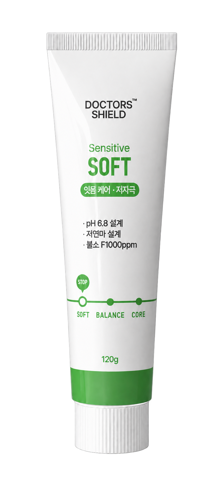
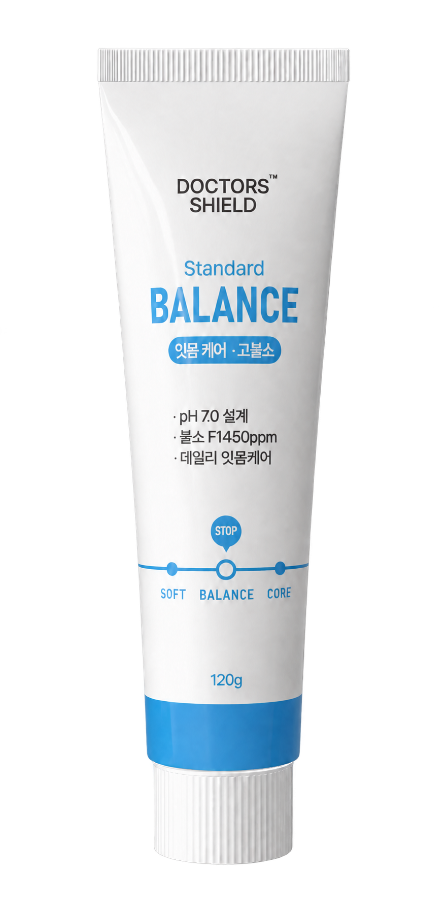
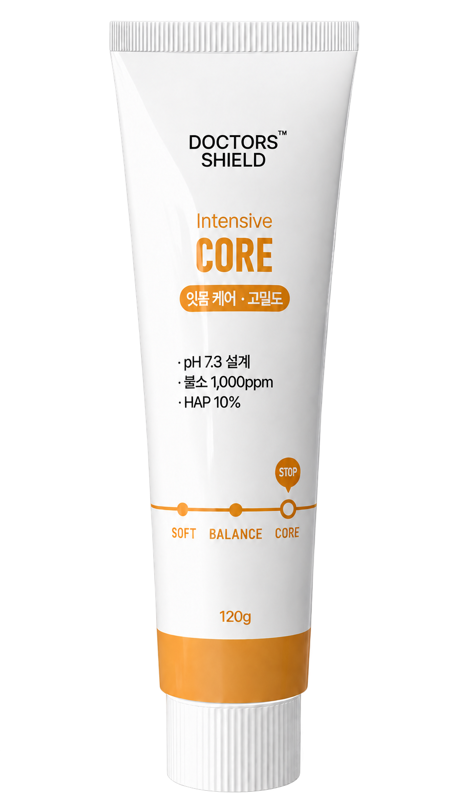

치은염·치주염 예방
잇몸질환 예방을 위한 매일의 관리
닥터스 쉴드 · 의약외품 잇몸치약
치은염·치주염·잇몸질환 예방을 위한 3종 잇몸치약, 닥터스 쉴드.
소프트·밸런스·코어의 성분과 사용감을 살펴, 나에게 맞는 매일의 관리를 시작하세요.
교정 여부와 관계없이 선택할 수 있습니다. 닥터스는 잇몸 상태별 치약 선택·전환 시스템 특허를 출원 중입니다.
닥터스 쉴드 3종의 공통 예방관리
소프트·밸런스·코어 모두 치은염·치주염·잇몸질환 예방, 치태제거와 불소에 의한 충치예방 효능을 갖춘 의약외품 치약입니다.
잇몸질환 예방을 위한 매일의 관리
칫솔질과 함께 이어가는 구강 청결 관리
잇몸과 치아를 함께 챙기는 예방관리
소프트·밸런스에는 치석침착예방 효능도 포함됩니다. 3종의 선택 기준과 차이 보기 ↗
같은 3종, 내 상태에 맞는 선택



판매 중
치은염·치주염·잇몸질환 예방, 충치예방, 치태제거. 치아·잇몸 복합 관리 · 불소 1,000 ppm · HAP 10% 배합.
코어 자세히 보기 ↗제품마다 다르게 구성한 성분과 사용감
유효성분의 구성과 불소 함량, 원하는 사용감을 함께 살펴보세요. 세 제품의 잇몸질환 예방 효능을 바탕으로, 매일 사용하기에 맞는 한 가지를 고를 수 있습니다.
잇몸이 예민해 부드러운 사용감을 원할 때
유효성분 구성 중
아미노카프로산 · 알란토인클로로히드록시알루미늄 · 피로인산나트륨
부드러운 사용감을 고려한 설계 · 불소 1,000 ppm
전체 성분·효능 확인 ↗잇몸·충치·치석침착 예방을 함께 챙기는 일상 관리
유효성분 구성 중
토코페롤아세테이트 · 피로인산나트륨
매일의 예방관리 · 불소 1,450 ppm
전체 성분·효능 확인 ↗치아와 잇몸의 예방관리를 함께 이어가고 싶을 때
유효성분 구성 중
토코페롤아세테이트 · 아미노카프로산 · 피리독신염산염
치아·잇몸 복합 관리 · 불소 1,000 ppm · HAP 10% 배합
전체 성분·효능 확인 ↗선택은 현재의 상태에서 시작합니다
잇몸이 예민해 부드러운 사용감을 원할 때 소프트로 시작했다면, 매일의 잇몸·충치·치석침착 예방관리를 함께 챙기고 싶을 때 밸런스를 살펴볼 수 있습니다. 치아·잇몸 복합관리를 원한다면 코어도 선택지입니다. 현재 제품이 잘 맞으면 한 가지를 계속 사용할 수 있습니다.
교정 중이라면 같은 3종을 교정 시기별로도 살펴볼 수 있습니다. 교정 시기별 선택 가이드 ↗
선택과 사용 방법을 연구합니다
닥터스는 잇몸 상태의 변화에 따라 치약을 선택하고 전환하는 시스템 특허를 출원 중입니다. 교정장치·유지장치 착용자를 위한 구강관리 시스템 특허도 등록하여, 교정 중 관리부터 일상적인 잇몸관리까지 선택과 사용 방법을 연구합니다.
잇몸 상태 기반 치약 선택 및 전환 시스템
잇몸 상태의 변화에 따라 치약을 선택하고 전환하는 구강관리 시스템을 연구합니다.
교정장치 또는 유지장치 착용자의 맞춤형 구강 위생 관리 시스템
교정 시기와 구강 상태에 따라 서로 다른 구강관리 조성물을 선택하고 안내하는 시스템을 연구·권리화했습니다.
잇몸치약 Q&A
네. 소프트·밸런스·코어 모두 치은염·치주염·잇몸질환 예방, 치태제거와 불소에 의한 충치예방 효능을 갖춘 의약외품 치약입니다. 교정 여부와 관계없이 사용할 수 있으며, 제품별 성분과 사용감에 맞춰 선택할 수 있습니다.
교정하지 않아도 잇몸질환 예방과 일상 구강관리를 위해 사용할 수 있습니다. 잇몸이 예민해 부드러운 사용감을 원할 때는 소프트, 잇몸·충치·치석침착 예방을 함께 챙기는 일상 관리에는 밸런스, 치아·잇몸 복합 관리에는 코어를 살펴보세요. 같은 3종 중 현재 상태와 원하는 사용감에 맞춰 선택합니다.
소프트는 아미노카프로산·알란토인클로로히드록시알루미늄 등을 배합하고 부드러운 사용감을 고려했습니다. 밸런스는 토코페롤아세테이트·피로인산나트륨 등과 불소 1,450 ppm을 함유합니다. 코어는 토코페롤아세테이트·아미노카프로산·피리독신염산염 등을 함유하며 HAP 10%를 기타첨가제로 배합했습니다. 세 제품 모두 잇몸질환 예방 효능을 갖추고 있어 성분 구성과 원하는 사용감을 함께 살펴 선택하세요.
아니요. 현재 구강 상태와 원하는 사용감에 맞는 한 가지로 시작할 수 있습니다. 사용감이나 관리 목적이 달라지면 다른 제품을 선택할 수 있으며, 세 제품을 반드시 순서대로 사용할 필요는 없습니다.
잇몸 상태 기반 치약 선택 및 전환 시스템은 특허 출원 중입니다. 잇몸 상태의 변화에 따라 치약을 선택하고 전환하는 구강관리 시스템에 관한 연구입니다. 제품의 잇몸질환 예방 효능과 함께, 닥터스가 연구하는 선택·사용 방법을 소개합니다.
같은 닥터스 쉴드 소프트·밸런스·코어 3종입니다. 평소에는 잇몸 상태와 원하는 사용감으로, 교정 중에는 교정 시기와 현재 구강 상태를 함께 살펴 선택합니다.
제품에 표시된 용법·용량과 사용상의 주의사항에 따라 사용하세요. 잇몸 붓기·출혈·통증이 지속되면 치과에서 확인하세요.